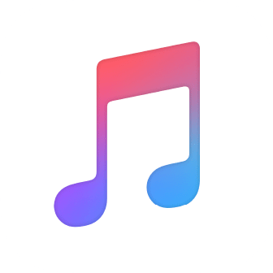
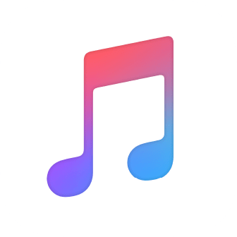

THRIVING
THROUGH
UNCERTAINTY.
A curated list of resources meant to empower in a time of foreseeable uncertainty.
Hey folks, our current setback comes as an untimely, uncomfortable, and frightening situation. It's easy to let uncertainty flood our minds and ultimately control our actions, our hearts, and our lives. Times like these teach us that it is not only healthy but imperative that we push ourselves forward with even more diligence than typical. At LIVEINEVERYNOW. we believe that the best way through uncertainty is to take control of the things we can still control. We're choosing to view the recommended time in isolation as an opportunity to work on the parts of ourselves we wish to with even more fervor than ever before.
We feel most empowered through knowledge and hope that this page can serve as an empowerment tool for you. All hope is not lost. Continue your journeys and focus on what you can control, for fear and anxiety lie in wait otherwise. And finally, live for yourself, live for others, and live in every now.
For starters. check out this video on how Matt D'Avella deals with uncertainty. We endorse this outlook.